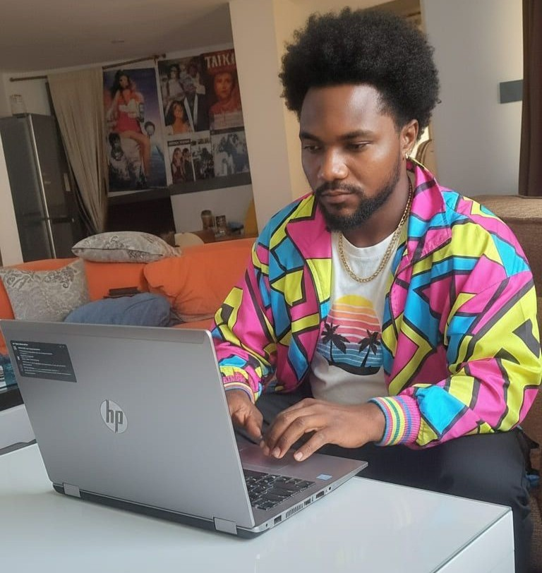

Mark John | WDD 130

Welcome to Mark John’s Web Design & Development Homepage! Here, you’ll find a growing collection of projects, assignments, and creative experiments showcasing my journey in modern web design and development. Feel free to explore, learn, and see how each piece reflects my progress and passion for building clean, functional, and user-friendly web experiences.